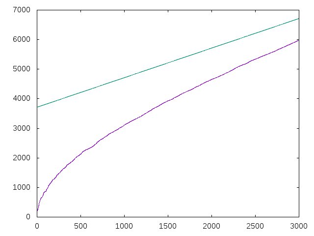

Números apocalípticos
Un número apocalíptico es aquel número natural n tal que 2^n contiene la secuencia 666.
Definir las funciones
esApocaliptico :: Integer -> Bool apocalipticos :: [Integer] mayorNoApocalipticoMenor :: Integer -> Maybe Integer grafica :: Integer -> IO ()
tales que
- (esApocaliptico n) se verifica si n es un número apocalíptico. Por ejemplo,
esApocaliptico 666 == True esApocaliptico 29784 == False
- apocalipticos es la lista de los números apocalípticos. Por ejemplo,
take 9 apocalipticos == [157,192,218,220,222,224,226,243,245] apocalipticos !! 55 == 666
- (mayorNoApocalipticoMenor n) es justo el mayor número no apocalíptico menor que n. Por ejemplo,
mayorNoApocalipticoMenor 40000 == Just 29784 mayorNoApocalipticoMenor 29784 == Just 26667
- (grafica n) dibuja las gráficas de los n primeros términos de la sucesión de los números apocalípticos junto con los de la sucesión a(n) = 3715+n. Por ejemplo, (grafica 3000) dibuja

y (grafica 30000) dibuja

Soluciones
import Data.List (isInfixOf, find, genericTake) import Graphics.Gnuplot.Simple esApocaliptico :: Integer -> Bool esApocaliptico = isInfixOf "666" . show . (2^) apocalipticos :: [Integer] apocalipticos = filter esApocaliptico [1..] mayorNoApocalipticoMenor :: Integer -> Maybe Integer mayorNoApocalipticoMenor n = find (not . esApocaliptico) [n-1,n-2..1] grafica :: Integer -> IO () grafica n = plotLists [ Key Nothing , PNG ("Numeros_apocalipticos_" ++ show n ++ ".png") ] [ genericTake n apocalipticos , [3715..3715+n-1] ]